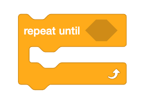
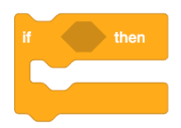
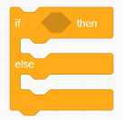
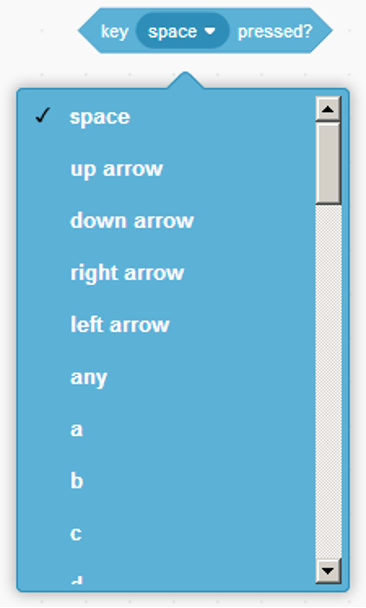

Scratch 1 Class - Guided Exercise
Lesson 5 Guide
Vocabulary:
- Conditional: A conditional is a statement that performs different actions based on whether a certain condition is true or false.
- Boolean: A boolean is a data type that represents one of two values: true or false. Booleans are often used in conditionals to make decisions in code.
- While Loop: A while loop is a type of loop that keeps repeating a set of instructions as long as a certain condition is true. This is a loop and a conditional.
- If Statement: An if statement is a type of conditional that executes a set of instructions only if a certain condition is true.
- If Else Statement: An if-else statement is a type of conditional that executes one block of code if a condition is true and another block of code if the condition is false.
Blocks Used/Introduced Today:
-

The While Loop. Use this block to create the conditional to where the while loop will execute.
-

If Conditional. If the conditional is met, the code inside will execute.
-

If Else Conditional. Allows you to program the conditional if the conditional is not met.
-

This block lets your conditional be checked. The computer will check if the key you selected has been pressed or not.
-

Touching Color. This block checks if the sprite is touching a specified color. Often used in conditionals to trigger an action when the sprite interacts with a specific color on the stage.
-

Key Pressed. This block checks if a specific key on the keyboard is pressed. It is commonly used in conditionals to trigger actions based on user input.
-

Mouse Down. This block checks if the mouse button is being pressed. It can be used to create interactive elements where the sprite reacts to mouse clicks.
Exercise 1: Implementing Conditionals
A conditional in coding is a statement that allows a program to execute a certain piece of code only if a specific condition is met.
Conditionals are very versatile and important. It allows programs to handle multiple scenarios and basically allows the computer to make decisions!
Examples include:
A conditional check is when the computer "checks" whether a certain condition, like pressing a key, is met. Think of it when someone asks you a yes no question. This is how conditionals are executed.
If Conditional: Use the "If" block to make a decision in your code. The sprite will only execute the action if the condition inside the block is true.
If Else Conditional: Use the "If Else" block when you need the sprite to perform one action if the condition is true, and a different action if it is false.
While Loop: Although the while loop is technically a loop, it is also a conditional. Use the "While" block when you want to repeat an action until a certain condition is no longer true.